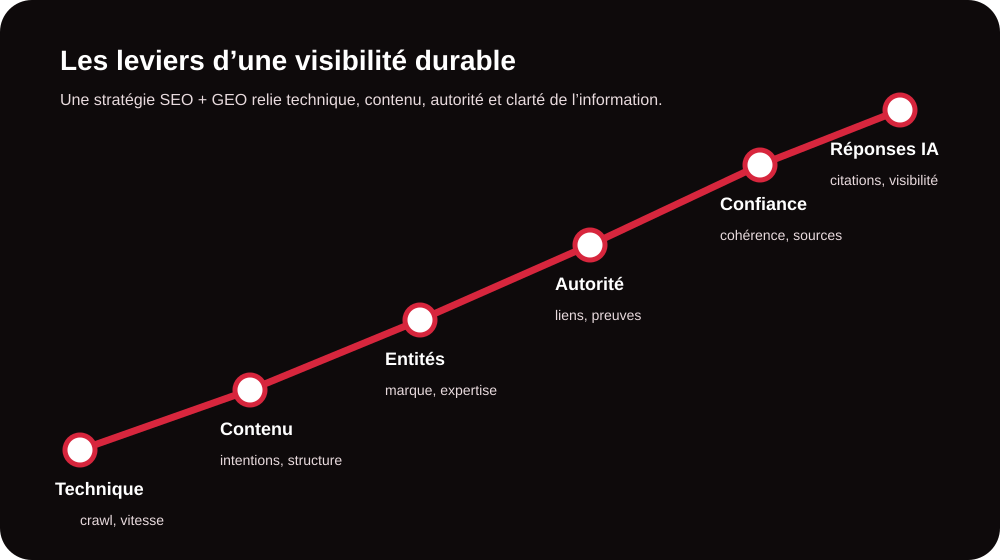

Comprendre le SEO et le GEO
Le SEO (Search Engine Optimization) vise à améliorer la présence d’un site dans les résultats organiques des moteurs de recherche. Il repose notamment sur la qualité technique du site, la pertinence des contenus, l’architecture des pages, l’expérience utilisateur et l’autorité acquise au fil du temps.
Le GEO (Generative Engine Optimization) élargit cette logique. L’objectif est de rendre une entreprise, ses expertises et ses informations suffisamment claires et fiables pour être comprises et potentiellement reprises par les moteurs de réponse alimentés par l’IA. Le GEO ne remplace donc pas le SEO : il complète la stratégie de visibilité.

Pourquoi la visibilité change-t-elle ?
Une requête peut aujourd’hui produire une liste de liens, mais aussi une réponse synthétique, une comparaison ou une recommandation générée par une IA. Cela modifie la manière dont une marque doit travailler sa présence en ligne. Il ne suffit plus de viser un mot-clé : il faut aussi répondre clairement aux intentions de recherche, démontrer son expertise et rendre les informations facilement interprétables.
Pour une future clientèle de MinoSeo, cela signifie qu’un site doit être pensé comme une source d’information fiable, et non comme une simple vitrine. Les pages importantes doivent expliquer l’offre, les bénéfices, les preuves, les domaines d’expertise et les réponses aux questions réelles des prospects.
Les leviers prioritaires d’une stratégie SEO/GEO
| Levier | Objectif SEO | Apport GEO |
|---|---|---|
| Technique | Faciliter l’exploration et l’indexation. | Présenter une information accessible et structurée. |
| Contenu | Répondre aux requêtes avec précision. | Fournir des réponses claires, contextualisées et utiles. |
| Autorité | Renforcer la confiance et la compétitivité. | Multiplier les preuves externes et la cohérence de marque. |
| Entités & marque | Clarifier qui fait quoi et dans quel domaine. | Aider les moteurs IA à relier la marque à ses expertises. |
Optimiser les fondations techniques
Un travail SEO sérieux commence par les bases : vitesse, indexabilité, maillage interne, balises, architecture, compatibilité mobile, redirections et absence de blocages techniques. L’objectif est de permettre aux moteurs d’accéder facilement aux pages utiles et d’en comprendre la hiérarchie.
Créer des contenus utiles et orientés intention
Un bon contenu ne consiste pas à répéter un mot-clé. Il doit traiter un besoin précis, utiliser un vocabulaire naturel, apporter des exemples et répondre aux objections. Pour le GEO, les formulations de questions-réponses, définitions, comparatifs, données vérifiables et explications structurées sont particulièrement utiles pour rendre le sujet lisible par les systèmes de réponse.
Développer l’autorité avec le netlinking
Les liens provenant de sites pertinents restent un levier important pour renforcer la crédibilité d’un domaine. Une stratégie de netlinking qualitative privilégie la pertinence thématique, la diversité des sources et une progression cohérente plutôt qu’une accumulation de liens artificiels. Cette autorité complète le travail éditorial et technique.
Votre site est-il réellement visible aujourd’hui ?
Un audit permet d’identifier les freins techniques, éditoriaux, sémantiques et d’autorité avant d’investir dans des actions qui ne répondent pas à vos priorités.
Demander un audit gratuitLa méthode MinoSeo pour progresser durablement
Une stratégie SEO/GEO performante doit rester pragmatique. MinoSeo commence par analyser le site, le marché, les concurrents et les intentions de recherche. Les actions sont ensuite hiérarchisées selon leur impact potentiel et les ressources disponibles.
- Auditer la visibilité actuelle et les principaux points de blocage.
- Prioriser les pages, requêtes et contenus qui peuvent générer le plus de valeur.
- Optimiser la technique, le contenu, le maillage et les signaux de confiance.
- Renforcer l’autorité grâce à un netlinking pertinent et progressif.
- Mesurer les résultats et ajuster la stratégie selon les données observées.

Les erreurs à éviter
Vouloir être visible partout immédiatement est rarement efficace. Les erreurs les plus fréquentes sont la production massive de contenus sans stratégie, la sur-optimisation des mots-clés, le netlinking sans cohérence thématique et l’absence de suivi des performances. Une autre erreur consiste à considérer le GEO comme une technique isolée : la qualité des informations publiées, la cohérence de la marque et les preuves disponibles restent fondamentales.
SEO + GEO : une visibilité pensée pour les nouveaux parcours de recherche
Le référencement évolue, mais son principe essentiel demeure : apporter la meilleure réponse au bon moment. Le SEO travaille la visibilité dans les moteurs de recherche ; le GEO prépare également votre présence dans les environnements où l’utilisateur demande directement une réponse à une IA. En combinant technique, contenu, autorité et clarté de marque, votre entreprise construit une visibilité plus résiliente.
Prêt à renforcer votre visibilité SEO et GEO ?
MinoSeo vous accompagne avec une approche claire, progressive et adaptée à vos objectifs. Parlons de votre site et de vos priorités.
Parler de votre projet